- Módulo: Sistemas Operativos
- Título del trabajo Instalación desatendida
- Componentes del grupo: Aitor Machado y Tomás Rodríguez
- Curso Académico: 2013/2014
- Fecha de entrega: 20 de Mayo de 2014
La práctica consiste en la creación de una imagen ISO de windows 7 con instalación desatendida, en otras palabras, el
sistema operativo se instala en la máquina sin necesidad de que un usuario supervise la instalación. Para ello hemos necesitado
instalar el Kit de instalación Automatizada de Windows 7 "WAIK".
Para realizar la imagen desatendida hemos realizado los siguiente pasos:
- Primero deberemos copiar el contenido del DVD o la imagen ISO a una carpeta y situarla por ejemplo
en C:\ de tal forma que la ruta sea C:\W7
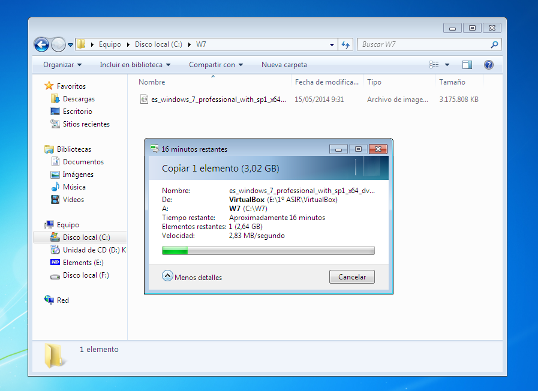
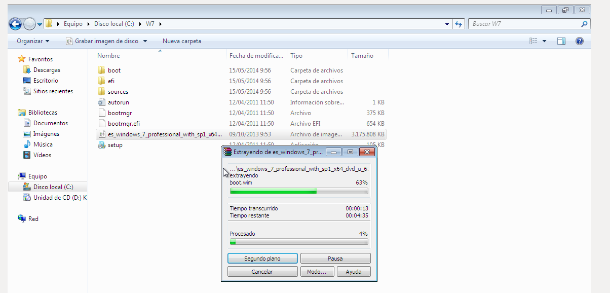
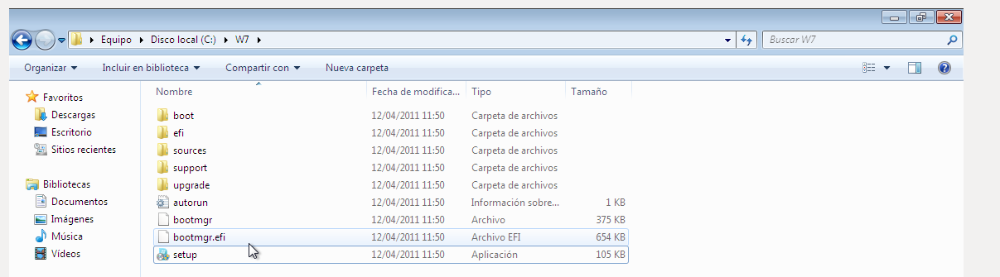
- Después, teniendo instalada la herramienta WAIK, nos vamos a Inicio > Todos los programas > Microsoft Windows AIK
> Administrador de imágenes del sistema de Windows. Lo ejecutamos como administrador..
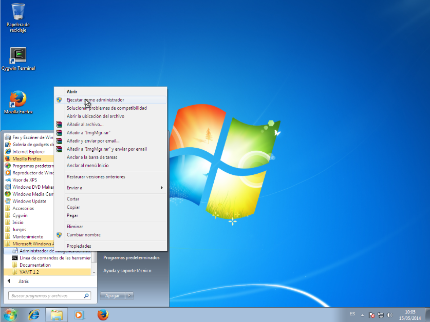
- Ahora deberemos crear un catálogo que es el que nos dirá que tiene, que se puede y no se
puede hacer dentro de la imagen seleccionada de Windows 7. Para ello nos vamos a Archivo >
Seleccionar imagen de Windows y buscamos el archivo install.wim que en este caso se encuentra
en C:\W7\Sources\install.wim, lo abrimos y nos saldrá una ventana en la que deberemos elegir
la versión de Windows 7 para la que queremos crear el archivo de autorespuesta. En este caso es Windows 7 Professional.
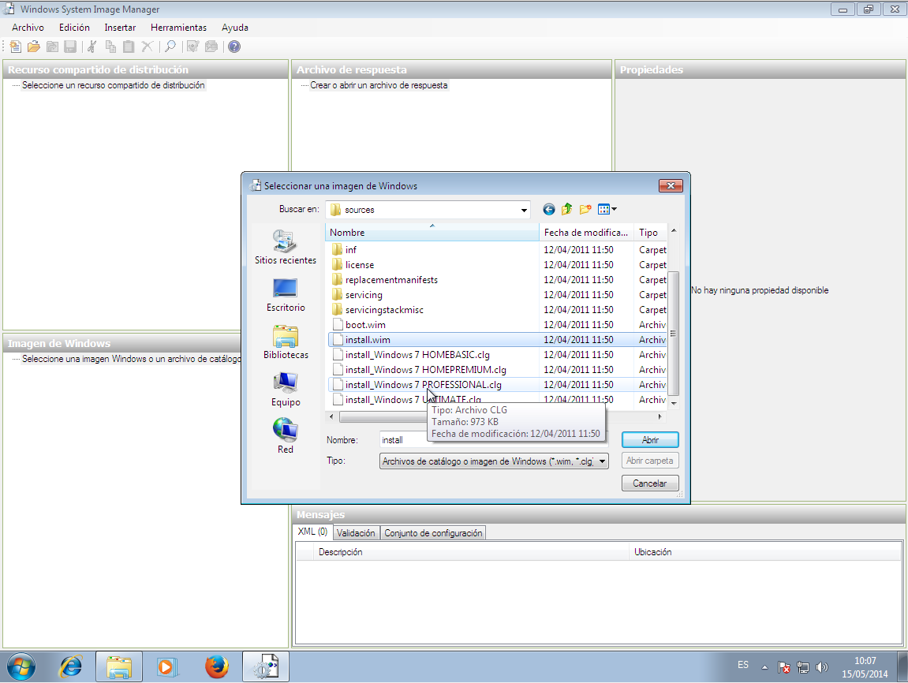
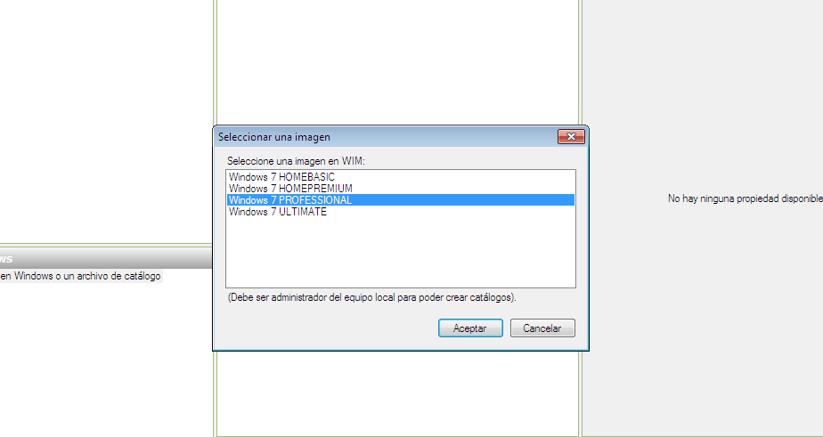
- Nos saldrá en la esquina inferior izquierda una lista que podemos desplegar con diferentes componentes y paquetes:
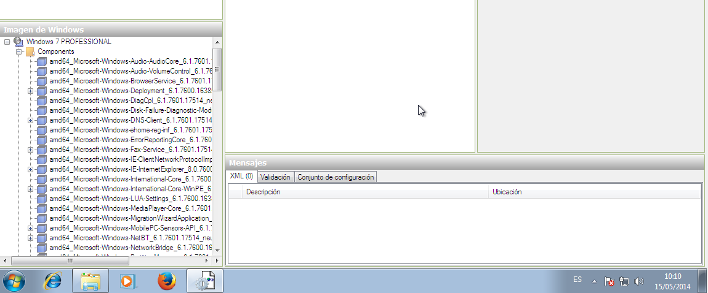
- Una vez hemos añadido la imagen, deberemos crear el archivo de Autorespuesta que configuraremos posteriormente; para ello nos vamos a Archivo > Nuevo archivo de respuesta.
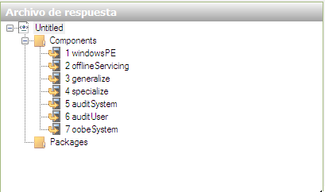
- Ahora deberemos agregar al archivo las respuesta los componentes de cada secuencia de la instalación.
Para ello, por ejemplo, en el componente amd64_Microsoft-Windows-International-Core-WinPE_6.1.7600.16385_neutral.
Luego haremos click derecho y seleccionamos Agregar configuración al ciclo 1 windowsPE
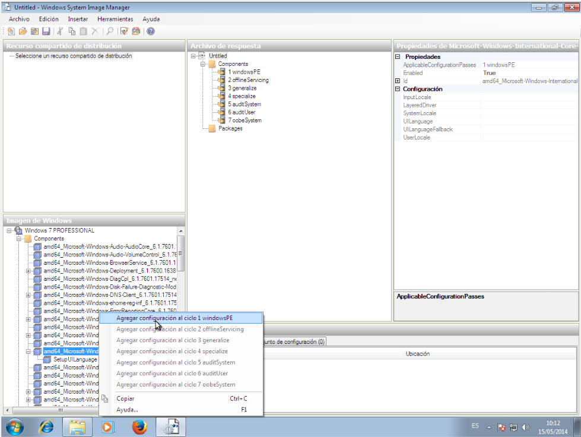
- Ahora configuraremos las opciones del componente en el panel de la derecha, en este caso utilizaremos es-ES
ya que queremos que la instalación sea en español.
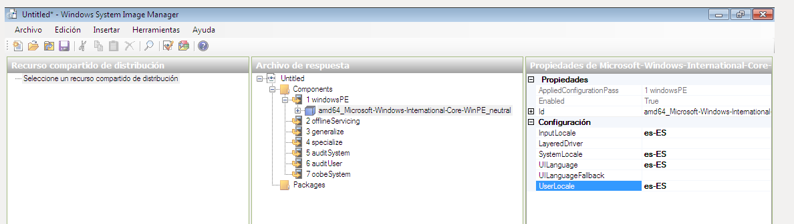
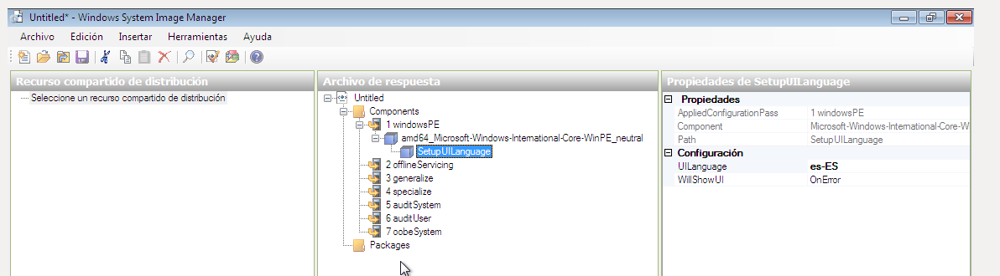
- Adjunto una tabla con los componentes y configuraciones que hemos usado en esta práctica.

- Para terminar sólo debemos guardar el archivo de respuesta en Archivo > Guardar archivo de respuesta
como > ruta donde está los archivos del windows a instalar, el nombre debe ser Autounattend.xml es muy
importante ya que el sistema sólo reconocerá el archivo si tiene este nombre.
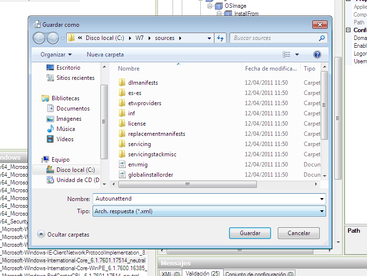
- Para que se inicie de forma automática la instalación de las aplicaciones que queramos al iniciarse
el sistema después de su instalación deberemos agregar el componente: Microsoft-Windows-Shell-Setup_neutral
> FirstLogonCommands > Synchronous Command. En nuestro caso hemos elegido el CCleaner.
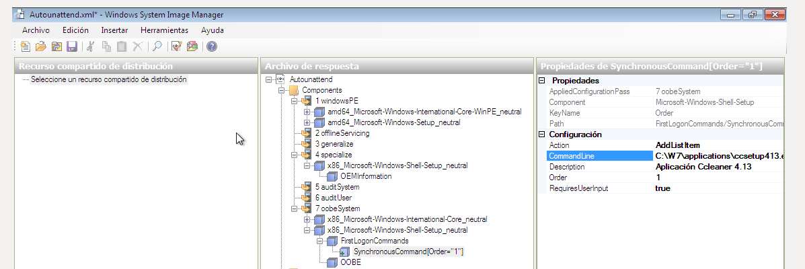
3. Creación y prueba de la ISO.
- Abrimos desde Inicio > Todos los programas > Microsoft Windows AIK > Línea de comandos de las herramientas
de implementación y se nos abrirá una consola de comandos. Seguidamente escribimos oscdimg –n –m –bRuta_de_directorio\boot\etfsboot.com
Ruta_de_directorio Ruta_de_directorio_ a_guardar\ Nombre_de_imagen.iso
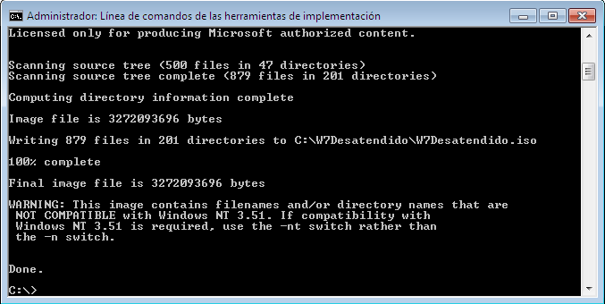
- Si todo es correcto comenzará la creación de nuestra ISO desatendida lista para ser usada.
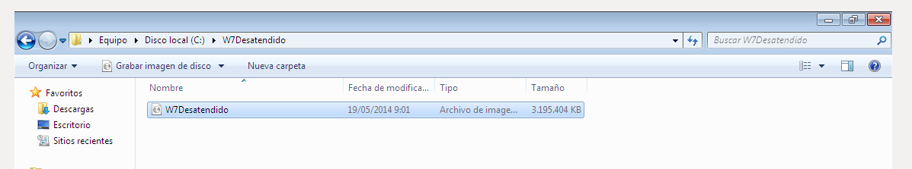
- Al crear la máquina y introducir la ISO, el windows me ha dado el siguiente error: 0xc0000225 y lo
hemos solucionado yendo a la BIOS de la máquina virtual y seleccionando "Habilitar IO APIC".

- Al solucionar el problema, hemos podido usar la ISO sin ningún problema.
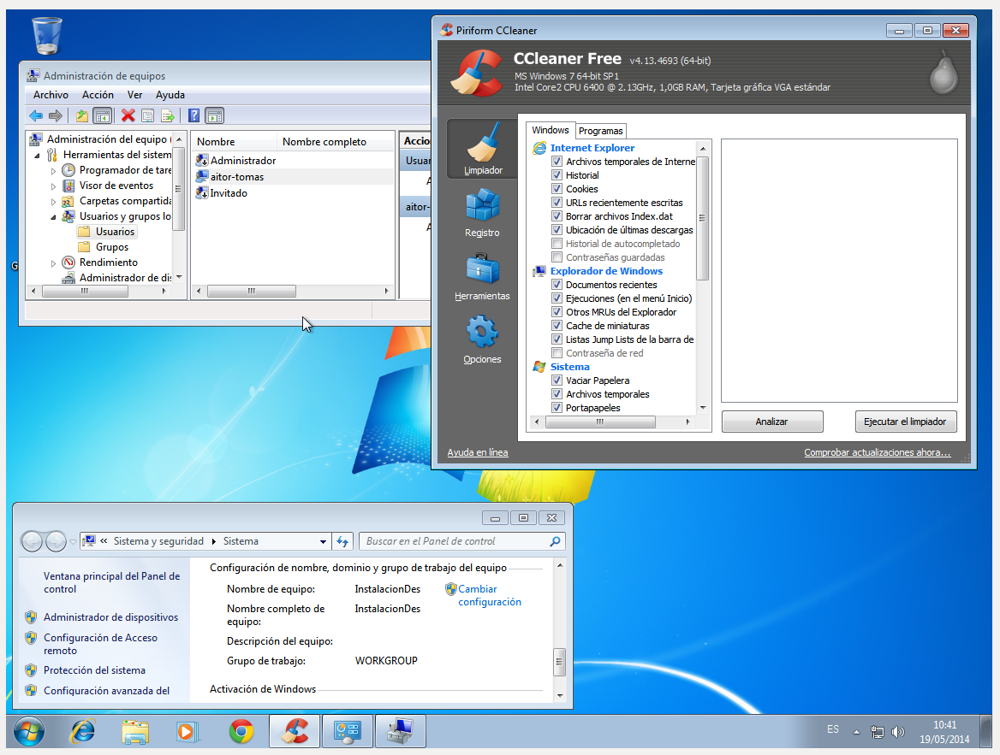